第 5 章 瞬态导热#
本章解决：前四章都是"温度分布不随时间变化"的稳态问题，而工程里大量过程是瞬态的——工件淬火、热电偶测温、电路板上电、激光加热组织，边界条件一变，物体内每一点的温度都随时间变。本章给你一套完整的求解路线：先算毕渥数判断物体内部温度梯度能不能忽略（能，就用集总参数法一步写出指数衰减解）；不能，就按几何选一维精确解（平壁、圆柱、球的级数解与单项近似）、半无限大物体解（误差函数），或周期性加热的准稳态解；几何和边界再复杂，就用有限差分法显式或隐式格式在时间上步进。每个物体被加热或冷却所能交换的总能量，也都有现成公式可查。
5.0 本章导图#
5.1 集总参数法#
最简单也最常见的瞬态导热问题：一块固体，其热环境突然改变。设想一块初始温度均匀为 \(T_i\) 的热金属锻件，浸入温度 \(T_{\infty} < T_i\) 的液体中淬火（图 5.1）。淬火从 \(t = 0\) 开始，固体温度随时间下降，直至最终到达 \(T_{\infty}\)。降温的机制是固–液界面的对流换热。
集总参数法（lumped capacitance method）的核心假设只有一句：在瞬态过程的任一时刻，固体温度在空间上均匀。这等于假设固体内部温度梯度可以忽略。
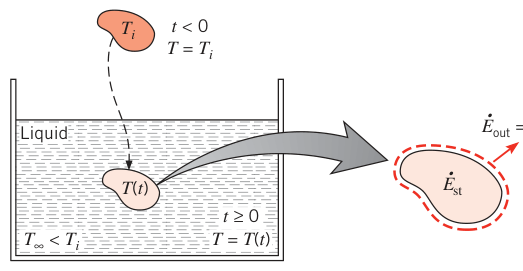
由傅里叶定律，没有温度梯度就没有导热——"内部导热系数无穷大"当然不可能，但当固体内部的导热热阻远小于固体与环境的换热热阻时，这个假设是很好的近似。
内部温度梯度被忽略后，就不能再从热方程（微分方程）出发了——它描述的正是空间温度分布。替代方案：对整块固体做总体能量平衡，把表面散热速率与内能变化速率联系起来。对图 5.1 的控制体应用式 (1.12c)：
即
引入温差
注意 \(T_{\infty}\) 为常数时 \(\frac{d\theta}{dt} = \frac{dT}{dt}\)，于是
分离变量，从初始条件（\(t = 0\)，\(T(0) = T_i\)，即 \(\theta_i = T_i - T_{\infty}\)）积分到任意时刻：
求出积分：
式 (5.5) 用来求"达到某温度 \(T\) 需要多久"，式 (5.6) 用来求"某时刻 \(t\) 固体达到了什么温度"。固体与流体的温差按指数规律衰减到零（图 5.2）。
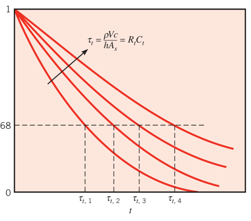
式 (5.6) 指数中的量 \(\rho Vc/(hA_s)\) 有明确的物理身份——热时间常数（thermal time constant）：
其中 \(R_t = 1/(hA_s)\) 是对流换热热阻（式 3.9），\(C_t = \rho Vc\) 是固体的集总热容（lumped thermal capacitance）。\(R_t\) 或 \(C_t\) 越大，固体对热环境变化的响应越慢——这与 RC 电路中电容经电阻放电的电压衰减完全同构。
总换热量。从 0 到 \(t\) 累积传出的总能量 \(Q\)：
代入式 (5.6) 积分：
\(Q\) 当然与固体内能变化相联系，由式 (1.12b)：
淬火时 \(Q\) 为正、固体内能减少；固体被加热（\(\theta < 0\)）时 \(Q\) 为负、内能增加。式 (5.5)、(5.6)、(5.8a) 对加热、冷却两种情形都成立。
拓展：时间常数的 63.2% 与 5τ 规则
一阶指数衰减的通用记忆法：经过一个时间常数 \(\tau_t\)，温差降到初始值的 \(e^{-1} = 0.368\)（降了 63.2%）；经过 \(3\tau_t\) 降到 5%，经过 \(5\tau_t\) 降到 0.67%。工程上常说"5 个时间常数后基本到达新环境温度"，例 5.1 就是这么用的。想让温度计跟手（响应快），就要小 \(\tau_t\)：小热容（小球头）、强对流（大 \(h\)）。
5.2 集总参数法的适用性#
集总参数法简单方便，所以大家天然偏爱它——前提是算得准。判据从一块平壁的稳态导热推出来（推法是稳态的，结论对瞬态同样适用）。
看图 5.3：面积为 \(A\) 的平壁，一个表面维持 \(T_{s,1}\)，另一个表面暴露于温度 \(T_{\infty} < T_{s,1}\) 的流体，该表面温度为中间值 \(T_{s,2}\)（\(T_{\infty} < T_{s,2} < T_{s,1}\)）。稳态下表面能量平衡（式 1.13）给出
整理：
这个无量纲量叫毕渥数（Biot number），在含表面对流的导热问题里地位根本。两个等价的解读：
- 温差之比：\(Bi\) 度量"固体内部的温度降"与"固体表面到流体的温差"之比；
- 热阻之比：\(Bi\) 是内部导热热阻与边界层对流热阻之比。
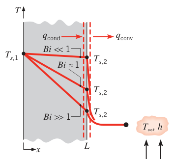
拓展：毕渥数与努塞尔数不要混
4.2 节见过的努塞尔数 \(Nu = hL/k\) 形状与 \(Bi\) 一样，但角色相反：\(Nu\) 里的 \(k\) 是流体的导热系数，度量"表面对流换热相对流体导热的强化倍数"，是待求量（第 6 章的关联式算它）；\(Bi\) 里的 \(k\) 是固体的导热系数，度量"固体内部导热热阻相对表面换热热阻之比"，是判据量（决定能不能用集总参数法）。一个看边界层、一个看固体内部，考试爱考这两者的区别。
瞬态问题里同样如此。图 5.4 画了一块初始温度均匀的平壁浸入流体对流冷却后的三种分布：\(Bi \ll 1\) 时内部梯度小得可以忽略，\(T(x,t) \approx T(t)\)，集总参数法成立；\(Bi\) 中等或大时梯度显著，必须 \(T = T(x,t)\)；\(Bi \gg 1\) 时跨壁温差远大于表面–流体温差。
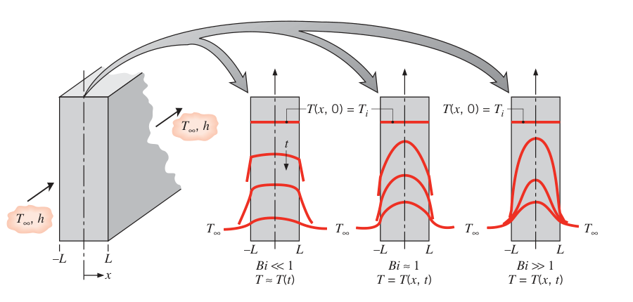
所以拿到瞬态加热/冷却问题，第一件事就是算毕渥数。若满足
用集总参数法的误差就很小。特征长度习惯取体积与表面积之比：
它对复杂形状也好算：厚 \(2L\) 的平壁（两面对流）\(L_c = L\)；长圆柱 \(L_c = r_o/2\)；球 \(L_c = r_o/3\)。想保守一点（把判据卡得更严），\(L_c\) 应取"对应最大空间温差"的尺度：对称冷却的平壁仍是半厚 \(L\)，但长圆柱和球要改用真实半径 \(r_o\)，而不是 \(r_o/2\)、\(r_o/3\)。
把 \(L_c = V/A_s\) 代回式 (5.6) 的指数，还能拆出一个无量纲组合：
其中
叫傅里叶数（Fourier number）——无量纲时间，与毕渥数一起刻画瞬态导热问题。于是式 (5.6) 写成
【例 5.1】热电偶的时间常数
已知（Known）：热电偶结点可近似为球，用于测量气流温度。结点表面与气体间的对流换热系数 \(h = 400\ \mathrm{W/(m^2 \cdot K)}\)，结点物性 \(k = 20\ \mathrm{W/(m \cdot K)}\)、\(c = 400\ \mathrm{J/(kg \cdot K)}\)、\(\rho = 8500\ \mathrm{kg/m^3}\)。
求（Find）：1. 结点直径多大才能让时间常数为 1 s？2. 结点初温 25°C，放入 200°C 的气流，升到 199°C 要多久？
示意图（Schematic）：
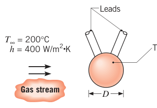
假设（Assumptions）：1. 结点温度任一时刻空间均匀；2. 与环境的辐射换热可忽略；3. 经引线的导热损失可忽略；4. 物性为常数。
分析（Analysis）：
- 直径未知，所以没法先验证判据 (5.10)——合理的做法是先用集总参数法把直径求出来，再回头检查判据。对球，\(A_s = \pi D^2\)、\(V = \pi D^3/6\)，由式 (5.7)：
解出直径：
取 \(L_c = r_o/3\) 验证判据 (5.10)：
判据满足（按保守的 \(L_c = r_o\) 算同样满足），集总参数法是极好的近似。
- 结点升到 \(T = 199^\circ\mathrm{C}\) 所需时间由式 (5.5)：
点评（Comments）：结点与环境的辐射换热、经引线的导热都会影响响应，而且会让平衡温度偏离 \(T_{\infty}\)——例 5.2 就来算这笔账。
5.3 集总参数分析的一般形式#
瞬态导热不总是对流引起的：辐射（固体与气体或真空隔开时）、表面施加的热流（贴电热膜）、体积内生成（通电）都能让固体温度随时间变化。图 5.5 是最一般的情形：对流、辐射、表面热流 \(q_s''\)、内热生成同时作用。初始 \(t = 0\) 时固体温度 \(T_i\) 不同于流体温度 \(T_{\infty}\) 与环境温度 \(T_{sur}\)，且表面加热与体积生成功同时启动。施加热流 \(q_s''\) 占据面积 \(A_{s,h}\)，对流与辐射占据 \(A_{s(c,r)}\)，两块面积互不重叠。
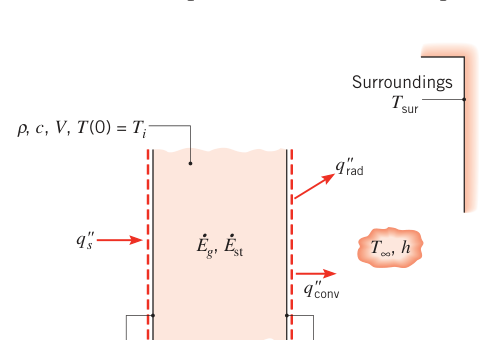
对任意时刻应用能量守恒（式 1.12c）：
代入式 (1.3a) 与 (1.7)：
这是一个非线性、一阶、非齐次常微分方程，积不出精确解；但它的几种简化情形有精确解。
5.3.1 只有辐射#
无施加热流、无生成，对流不存在（真空）或相对辐射可忽略：
分离变量并积分：
求出积分并整理，得到"达到温度 \(T\) 所需时间"：
这个式子没法反解出 \(T(t)\)，也没法令 \(T_{sur} \to 0\)。但对 \(T_{sur} = 0\)（向深空辐射）回到式 (5.17) 直接积分可得
5.3.2 辐射可忽略#
若辐射可忽略，且各量（除 \(T\) 本身）都不随时间变化，引入 \(\theta = T - T_{\infty}\)（\(\frac{d\theta}{dt} = \frac{dT}{dt}\)）后，式 (5.15) 化为线性一阶非齐次方程：
其中 \(a = \frac{hA_{s,c}}{\rho Vc}\)，\(b = \frac{q_s''A_{s,h} + \dot{E}_g}{\rho Vc}\)。用变换
消掉非齐次项（\(\frac{d\theta'}{dt} = \frac{d\theta}{dt}\)），代入式 (5.20)：
从 0 到 \(t\)（\(\theta'_i\) 到 \(\theta'\)）分离变量积分：
代回 \(\theta'\) 与 \(\theta\)：
于是
检验：\(b = 0\) 时退化为式 (5.6)；\(t = 0\) 时 \(T = T_i\)；\(t \to \infty\) 时 \(T - T_{\infty} = b/a\)——这正是稳态能量平衡的结果。
5.3.3 只有对流，且对流换热系数随温度变化#
自然对流和沸腾里，\(h\) 常随物体与流体温差变化，可近似为
\(n\) 是常数，\(C\) 的单位是 W/(m²·K\(^{(1-n)}\))。若辐射、表面加热、体积生成均可忽略，式 (5.15) 变为
引入 \(\theta = T - T_{\infty}\)（\(\frac{d\theta}{dt} = \frac{dT}{dt}\)）、分离变量、从初始条件积分，得
\(h\) 与温度无关（\(n = 0\)）时，式 (5.28) 退化为式 (5.6)。
5.3.4 其他情形#
环境温度本身随时间变化的情形（比如绝热有限容积的液体被热锻件加热，液温也在涨）同样能解——例 11.8 给出了解析解。物性随温度变化、边界条件随时间变化、生成率变化等复杂情况，用数值方法（式 5.15 离散后沿时间积分）都能处理，例 5.2 到例 5.4 就是示范。
【例 5.2】热电偶的辐射误差
已知（Known）：条件同例 5.1（结点 \(D = 0.7\ \mathrm{mm}\)，\(\rho = 8500\ \mathrm{kg/m^3}\)，\(c = 400\ \mathrm{J/(kg \cdot K)}\)，气流 \(T_{\infty} = 200^\circ\mathrm{C}\)，\(h = 400\ \mathrm{W/(m^2 \cdot K)}\)），但现在必须计及包围气流的管道壁的辐射。管壁温度 400°C，结点发射率 \(\varepsilon = 0.9\)。
求（Find）：1. 结点的稳态温度；2. 结点从 25°C 升到距稳态值 1°C 以内所需时间。
示意图（Schematic）：
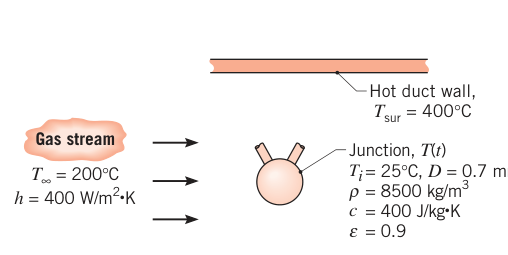
假设（Assumptions)：同例 5.1，但辐射不可忽略，按"小表面对大环境"处理。
分析（Analysis）：
- 稳态时对结点做能量平衡 \(\dot{E}_{in} - \dot{E}_{out} = 0\)：净辐射收入（热壁照给结点）必须被结点对气流的对流支出平衡：
代数（温度换算成 K：\(T_{sur} = 673\ \mathrm{K}\)，\(T_{\infty} = 473\ \mathrm{K}\)）解出
- 瞬态能量平衡为 \(\dot{E}_{in} - \dot{E}_{out} = \dot{E}_{st}\)，按式 (5.15) 写出：
对这含四次方项的一阶方程做数值积分，得 \(T(4.9\ \mathrm{s}) = 217.7^\circ\mathrm{C}\)。所以升到距稳态值 1°C 以内需要
点评（Comments）：
- 与热管壁的辐射把结点温度抬高了——温度计读出的"气流温度"比真实值偏高 18.7°C。达到近稳态的时间比重力只有对流的例 5.1 略短（辐射也在给结点加热），想一想为什么。
- 结点的响应与读数取决于气流速度（决定 \(h\)）。\(h = 200\)、400、800 W/(m²·K) 三档的温度–时间历史显示：\(h\) 越大，读数越接近真实气温，到达近稳态越快——物理解释留给你：辐射误差被更强的对流"稀释"了。
- IHT 软件用
Der(T, t)函数表示温度对时间的导数，可以积分一阶微分方程。
原书笔误
例 5.2 点评 1 原文把"例 5.1"印成了 "Example 5.l"（小写字母 l），应为 5.1。
【例 5.3】铝板涂层的两步固化
已知（Known）：3 mm 厚铝合金板（\(k = 177\ \mathrm{W/(m \cdot K)}\)，\(c = 875\ \mathrm{J/(kg \cdot K)}\)，\(\rho = 2770\ \mathrm{kg/m^3}\)）两面覆环氧涂层，涂层须在 \(T_c \ge 150^\circ\mathrm{C}\) 保持至少 5 min 才能固化。生产线两步：先在炉（\(T_{\infty,o} = 175^\circ\mathrm{C}\)，\(h_o = 40\ \mathrm{W/(m^2 \cdot K)}\)）中加热，再进冷室（\(T_{\infty,c} = 25^\circ\mathrm{C}\)，\(h_c = 10\ \mathrm{W/(m^2 \cdot K)}\)）冷却。加热段时长 \(t_e\) 比"升到 150°C 所需时间 \(t_c\)"多 5 min（\(t_e = t_c + 300\ \mathrm{s}\)）。涂层发射率 \(\varepsilon = 0.8\)，炉壁与冷室壁温度分别为 175°C 和 25°C。板以 25°C 进炉，从冷室取出时要求降到安全触摸温度 37°C。
求（Find）：两步固化工艺的总耗时 \(t_t\)。
示意图（Schematic）：
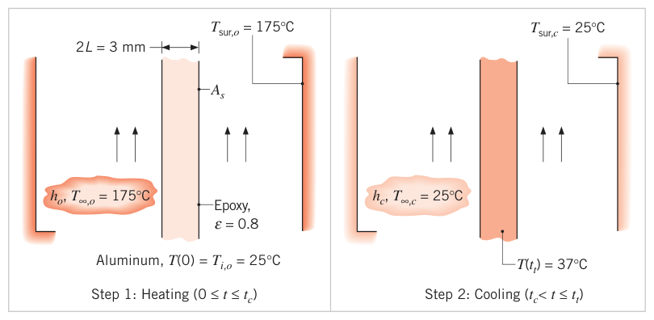
假设（Assumptions）：1. 板温任一时刻均匀；2. 环氧层热阻可忽略；3. 物性为常数。
分析（Analysis）：先算两个过程的毕渥数检验集总参数近似（\(L_c = L = 1.5\ \mathrm{mm}\)，单面加热/冷却时另一面对称）：
集总参数近似极好。
再判断辐射要不要算——用式 (1.9) 估辐射换热系数。加热过程取固化状态 \(T_c = 423\ \mathrm{K}\)、\(T_{sur,o} = 448\ \mathrm{K}\)：
同理冷却过程（\(T_c = 423\ \mathrm{K}\)，\(T_{sur,c} = 298\ \mathrm{K}\)）得 \(h_{r,c} = 8.8\ \mathrm{W/(m^2 \cdot K)}\)。两个 \(h_r\) 都与对应的 \(h_o\)、\(h_c\) 同量级——辐射必须算。
板的体积 \(V = 2L \cdot A_s\)（\(L = 1.5\ \mathrm{mm}\) 为半厚），对流与辐射都发生在两个表面，\(A_{s,c} = A_{s,r} = 2A_s\)。代入式 (5.15)（\(A_{s,h} = 0\)，\(\dot{E}_g = 0\)）：
两边除以 \(2A_s\)（单位面积）：
取时间步长 \(\Delta t = 10\ \mathrm{s}\) 数值积分：加热段积分到 \(t_e = t_c + 300\ \mathrm{s}\)，随后切换冷室参数继续积分，直到板温降到 37°C。计算结果画成温度历史曲线，总时间
其中 \(t_c = 124\ \mathrm{s}\)，\(t_e = 424\ \mathrm{s}\)。
点评（Comments）：
- 缩短工艺的两条路：加大换热系数，或者缩短延长加热段。后者的空间在于：冷却开始后的一段时间里板温仍高于 150°C，固化要求其实已经满足。若 \(h_o = h_c = 100\ \mathrm{W/(m^2 \cdot K)}\) 并保持 300 s 延长加热，数值积分给出 \(t_c = 58\ \mathrm{s}\)、\(t_t = 445\ \mathrm{s}\)，\(T > 150^\circ\mathrm{C}\) 的区间为 \(58 \le t \le 364\ \mathrm{s}\)（共 306 s）；把延长加热缩到 294 s，则 \(t_t = 439\ \mathrm{s}\) 且固化要求（300 s）仍满足——总时间缩短了。
- 数值积分精度随 \(\Delta t\) 减小而提高，但计算量增大。本例 \(\Delta t = 1\ \mathrm{s}\) 与 \(10\ \mathrm{s}\) 结果几乎相同——大步长就够。
- IHT 的 Models, Lumped Capacitance 里有现成模型可验证点评 1 或改工艺参数。
- 若毕渥数不小，集总参数法不成立：板中心温度会在加热结束后继续上升（表面热量向内传播），到达峰值后再降。大 \(Bi\) 下中心最高温度及其出现时间已有关联式可用。
【例 5.4】压缩空气净化能杀菌吗
已知（Known）：医院手术室的空气先经单级压缩机净化。空气经压缩升温、再降压降温，其中病原体颗粒随之升温、降温，若最高温度超过致死温度 \(T_d\) 即被杀死。球形病原体颗粒 \(D = 10\ \mu\mathrm{m}\)，\(\rho = 900\ \mathrm{kg/m^3}\)，\(c = 1100\ \mathrm{J/(kg \cdot K)}\)，\(k = 0.2\ \mathrm{W/(m \cdot K)}\)，分散在未净化的空气中。空气温度按 \(T_{\infty}(t) = 125^\circ\mathrm{C} + 100^\circ\mathrm{C} \cdot \cos(2\pi t/t_p)\) 变化，过程时间 \(t_p = 0.004\ \mathrm{s}\)。颗粒与气流间 \(h = 4600\ \mathrm{W/(m^2 \cdot K)}\)。初始颗粒温度 \(T_i = 25^\circ\mathrm{C}\)，致死温度 \(T_d = 220^\circ\mathrm{C}\)。
求（Find）：\(t_p = 0.004\ \mathrm{s}\) 时病原体是否被消灭。
示意图（Schematic）：
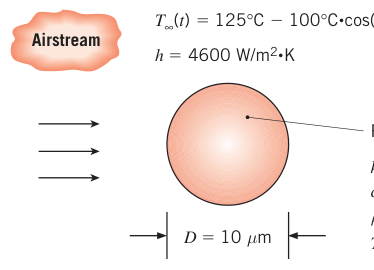
假设（Assumptions）：1. 物性为常数；2. 辐射可忽略。
分析（Analysis）：先算毕渥数：
集总参数近似成立，可用式 (5.2)。注意环境温度是时间的函数：
数值积分：给定初温 \(T_i\)，用 IHT 之类的求解器积分该方程。预测的颗粒温度峰值
病原体没有被消灭。
解析解：式 (1) 是线性非齐次方程，解 = 齐次解 + 特解。齐次解 \(T_h = c_0\exp(-6ht/\rho cD)\)；非齐次项含余弦与常数，用待定系数法设特解 \(T_p = c_1\cos(2\pi t/t_p) + c_2\sin(2\pi t/t_p) + c_3\)。代入定出系数，得
其中
再由初条件 \(T(0) = T_i\) 定出 \(c_0 = 100^\circ\mathrm{C}(A - 1)\)，完整解为
对式 (3) 求导、令导数为零可解出峰值时刻（方程冗长且隐式），更省事的办法是直接列表或画图找峰值：
两种解法一致：病原体未被消灭。
点评（Comments）：
- 解析解与数值解必须一致。
- 颗粒的热响应滞后于空气——传热必须有温差驱动。颗粒温度达到峰值时，恰好与气温相等（此时温差为零、传热归零、温度曲线相切），从图上和方程都能看出来。
- 把过程拉长能提高峰值温度：\(t_p = 0.008\ \mathrm{s}\) 时 \(T_{max} = 221^\circ\mathrm{C} > 220^\circ\mathrm{C}\)，病原体被杀死。但周期翻倍意味着单位时间送风量减半——送风量与净化程度是一对权衡。
- 辐射上限：按最高、最低温度取 \(\varepsilon = 1\) 估算 \(h_{r,max} = \sigma(T_{max} + T_{min})(T_{max}^2 + T_{min}^2) = 5.67 \times 10^{-8} \times 796 \times 3.428 \times 10^5 = 15.2\ \mathrm{W/(m^2 \cdot K)}\)，远小于 \(h\)，辐射可忽略。
- IHT 的
Der(T, t)生成数值解往往比推解析解快；找峰值时直接看图也比解析求导快。但解析解能显式展示参数依赖关系，这是数值解给不了的。 - 数值解步长 \(\Delta t = 0.00001\ \mathrm{s}\)；再减小一半结果不变。
- "达到致死温度即瞬间死亡"本身是近似——灭活还与高温暴露时长有关。
5.4 空间效应#
毕渥数不小的时候，内部温度梯度不能忽略，集总参数法会算出错误结果，必须换本章余下几节的方法。
最一般的形式就是热方程本身：直角坐标用式 (2.19)，柱、球坐标用式 (2.26)、(2.29)。很多问题其实只要一个空间坐标——比如图 5.4 的平壁。无内生成、导热系数为常数时，式 (2.19) 退化为一维热方程：
要解出 \(T(x,t)\)，还得配一个初始条件和两个边界条件。图 5.4 的典型瞬态问题：
式 (5.30) 设 \(t = 0\) 时温度均匀；式 (5.31) 是中面的对称条件；式 (5.32) 是 \(t > 0\) 的表面对流条件。显然，除 \(x\)、\(t\) 外，温度还依赖一串物理参数：
8 个变量的问题没法列表、没法画图——必须无量纲化。定义无量纲温度（把最大可能温差取成 1）：
\(0 \le \theta^* \le 1\)。无量纲坐标（\(L\) 为半厚）：
无量纲时间：
\(t^*\) 就是傅里叶数。代入式 (5.29)–(5.32)，热方程变为
初始与边界条件变为
其中 \(Bi = hL/k\)。无量纲形式的函数依赖为
对比式 (5.33) 与 (5.41) 就知道无量纲化的好处：几何给定时，瞬态温度分布是 \(x^*\)、\(Fo\)、\(Bi\) 三个无量纲量的普适函数，与 \(T_i\)、\(T_{\infty}\)、\(L\)、\(k\)、\(\alpha\)、\(h\) 的具体数值无关。集总参数法的式 (5.13) 正是它不含 \(x^*\) 的特例。后面各节全部用无量纲变量表达。
5.5 对流边界条件下的平壁#
简单几何与边界条件的瞬态导热问题已有精确解析解（分离变量法等，4.2 节用过），解的形式是无穷级数。好在除傅里叶数非常小的时段外，级数都可以只取第一项。
5.5.1 精确解#
看厚 \(2L\) 的平壁（图 5.6a）。厚度远小于宽、高时，导热只沿 \(x\) 方向。初始温度均匀 \(T(x, 0) = T_i\)，突然浸入 \(T_{\infty} \ne T_i\) 的流体。两表面 \(x^* = \pm 1\) 对流条件相同，所以任一时刻的分布关于中面（\(x^* = 0\)）对称。精确解为
其中 \(Fo = \alpha t/L^2\)，系数
离散的 \(\zeta_n\)（特征值，eigenvalues）是超越方程
的正根，前四个根见附录 B.3。精确解对任意时间 \(0 \le Fo \le \infty\) 成立。
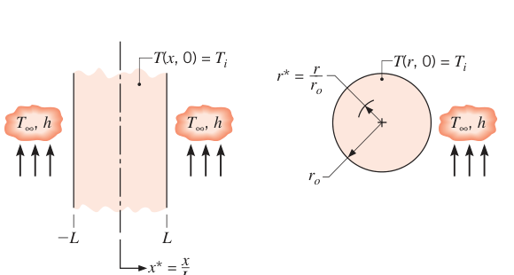
5.5.2 单项近似#
可以证明（习题 5.43）：\(Fo > 0.2\) 时，级数解 (5.42a) 用 \(n = 1\) 的单项近似就够了。此时
其中 \(\theta_o^* = \dfrac{T_o - T_{\infty}}{T_i - T_{\infty}}\) 是中面（\(x^* = 0\)）温度：
式 (5.43b) 有个重要推论：壁内任意位置的温度随时间的变化规律与中面温度完全相同（只差一个与时间无关的余弦因子）。\(C_1\) 与 \(\zeta_1\) 由式 (5.42b)、(5.42c) 按毕渥数取值，列在表 5.1。
表 5.1 一维瞬态导热级数解单项近似的系数（\(Bi = hL/k\) 为平壁，\(Bi = hr_o/k\) 为圆柱与球）
| \(Bi\) | 平壁 \(\zeta_1\)（rad） | 平壁 \(C_1\) | 圆柱 \(\zeta_1\)（rad） | 圆柱 \(C_1\) | 球 \(\zeta_1\)（rad） | 球 \(C_1\) |
|---|---|---|---|---|---|---|
| 0.01 | 0.0998 | 1.0017 | 0.1412 | 1.0025 | 0.1730 | 1.0030 |
| 0.05 | 0.2218 | 1.0082 | 0.3143 | 1.0124 | 0.3854 | 1.0149 |
| 0.1 | 0.3111 | 1.0161 | 0.4417 | 1.0246 | 0.5423 | 1.0298 |
| 0.2 | 0.4328 | 1.0311 | 0.6170 | 1.0483 | 0.7593 | 1.0592 |
| 0.5 | 0.6533 | 1.0701 | 0.9408 | 1.1143 | 1.1656 | 1.1441 |
| 1.0 | 0.8603 | 1.1191 | 1.2558 | 1.2071 | 1.5708 | 1.2732 |
| 2.0 | 1.0769 | 1.1785 | 1.5994 | 1.3384 | 2.0288 | 1.4793 |
| 5.0 | 1.3138 | 1.2402 | 1.9898 | 1.5029 | 2.5704 | 1.7870 |
| 10.0 | 1.4289 | 1.2620 | 2.1795 | 1.5677 | 2.8363 | 1.9249 |
| 20.0 | 1.4961 | 1.2699 | 2.2881 | 1.5919 | 2.9857 | 1.9781 |
| 50.0 | 1.5400 | 1.2727 | 2.3572 | 1.6002 | 3.0788 | 1.9962 |
| 100.0 | 1.5552 | 1.2731 | 2.3809 | 1.6015 | 3.1102 | 1.9990 |
| \(\infty\) | 1.5708 | 1.2733 | 2.4050 | 1.6018 | 3.1415 | 2.0000 |
单项近似的图形化用法（海斯勒图）见 5S.1 节说明。
5.5.3 总换热量#
很多时候要知道从 0 到 \(t\) 离开（或进入）平壁的总能量。对 \((0, t)\) 区间应用能量守恒（式 1.12b）：\(E_{in} + E_{out} = \Delta E_{st}\)。令 \(E_{in} = 0\)、\(Q = E_{out}\)、\(\Delta E_{st} = E(t) - E(0)\)：
引入
它是"固体相对流体温度的初始内能"，也是过程持续到 \(t \to \infty\) 的最大可能换热量。于是换热量比为
把平壁的单项近似式 (5.43b) 代入积分：
\(\theta_o^*\) 由式 (5.44) 确定，\(C_1\)、\(\zeta_1\) 查表 5.1。
5.5.4 补充说明#
两个立即可用的推广：
- 单面对流平壁：一侧绝热（\(x^* = 0\)）、另一侧对流（\(x^* = 1\)）的厚 \(L\) 平壁，与两侧对称对流的厚 \(2L\) 平壁在数学上是同一个问题——两种情形中面边界条件都是 \(\partial\theta^*/\partial x^* = 0\)。
- 表面温度突变：壁面温度突然变成 \(T_s\) 的过程，等价于对流换热系数无穷大（\(Bi \to \infty\)）、流体温度 \(T_{\infty}\) 换成表面温度 \(T_s\) 的对流问题。
【例 5.5】油管解冻
已知（Known）：AISI 1010 钢管，直径 1 m，壁厚 40 mm，外壁重度保温。通油前管壁温度均匀 \(-20^\circ\mathrm{C}\)。通入 60°C 的热油，内表面对流条件 \(h = 500\ \mathrm{W/(m^2 \cdot K)}\)。
求（Find）：通油 8 min 后：1. 合适的毕渥数与傅里叶数；2. 被保温层覆盖的外壁面温度；3. 油向管壁的热流密度 \(q''\)（W/m²）；4. 单位管长从油传给管壁的能量。
示意图（Schematic）：
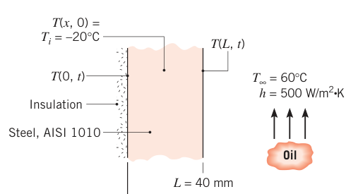
假设（Assumptions）：1. 壁厚远小于直径，管壁可按平壁处理；2. 物性为常数；3. 管外壁绝热。
物性（Properties）：表 A.1，AISI 1010 钢，\(T = (-20 + 60)/2 \approx 300\ \mathrm{K}\)：\(\rho = 7832\ \mathrm{kg/m^3}\)，\(c = 434\ \mathrm{J/(kg \cdot K)}\)，\(k = 63.9\ \mathrm{W/(m \cdot K)}\)，\(\alpha = 18.8 \times 10^{-6}\ \mathrm{m^2/s}\)。
分析（Analysis）：
- \(t = 8\ \mathrm{min}\) 时，由式 (5.10) 与 (5.12) 取 \(L_c = L = 40\ \mathrm{mm}\)：
- \(Bi = 0.313\)，集总参数法不适用。但 \(Fo > 0.2\)，且"厚 \(L\)、内侧对流、外侧绝热"等价于"厚 \(2L\)、对称对流"（5.5.4 节），可用平壁单项近似。保温层下的外壁面对应等效平壁的中面。由式 (5.44)：
\(Bi = 0.313\) 查表 5.1 得 \(C_1 = 1.047\)、\(\zeta_1 = 0.531\ \mathrm{rad}\)。代入 \(Fo = 5.64\)：
8 min 后外壁温度（等效中面温度）：
- 内表面 \(x = L\) 的传热靠对流，任意时刻的热流密度由牛顿冷却公式给出。表面温度用式 (5.43b)（\(x^* = 1\)）：
- 8 min 内传给管壁的能量由式 (5.47) 与 (5.49)：
单位管长体积 \(V' = \pi D L\)：
点评（Comments）：
- \(q''\) 与 \(Q'\) 的负号表示传热方向是从油到管壁（进入管壁）。
- IHT 的 Transient Conduction, Plane Wall 模型用多项级数求解，比单项近似更精确；径向系统也有对应模型。
5.6 径向系统：无限长圆柱与球#
半径 \(r_o\) 的无限长圆柱或球（图 5.6b），初始温度均匀、对流条件突变时，做法与平壁完全平行：精确级数解 + 单项近似。无限长圆柱是允许"只沿径向一维导热"假设的理想化，对 \(L/r_o \gtrsim 10\) 的长圆柱是合理近似。
5.6.1 精确解#
初始温度均匀、对流边界条件下，精确解（\(Fo \ge 0\) 任意时刻成立）如下。
无限长圆柱，无量纲温度：
其中 \(Fo = \alpha t/r_o^2\)，\(r^* = r/r_o\)，系数
特征值是超越方程
的正根，\(Bi = hr_o/k\)。\(J_1\)、\(J_0\) 是第一类贝塞尔函数，数值表见附录 B.4。
球：
特征值方程：
5.6.2 单项近似#
与平壁一样，\(Fo > 0.2\) 时取 \(n = 1\) 足够，且径向系统内任意位置的温度随时间的变化规律与中心线（或中心点）相同。
无限长圆柱：
中心线温度：
球：
中心温度：
\(C_1\)、\(\zeta_1\) 都查表 5.1。
5.6.3 总换热量#
代入单项近似式 (5.52b)、(5.53b) 与 \(Q_o\)（式 5.47），积分结果：
无限长圆柱
球
\(\theta_o^*\) 由式 (5.52c) 或 (5.53c) 确定，系数查表 5.1。
5.6.4 补充说明#
与平壁相同：表面温度突变的圆柱、球问题，取 \(Bi \to \infty\) 并把 \(T_{\infty}\) 换成恒定表面温度 \(T_s\) 即可。
【例 5.6】球的两步冷却
已知（Known）：某新材料工艺需评估。半径 \(r_o = 5\ \mathrm{mm}\) 的球在炉中 400°C 平衡后突然取出，两步冷却。第 1 步：20°C 空气中冷却，\(h_a = 10\ \mathrm{W/(m^2 \cdot K)}\)，直到中心温度达到临界值 \(T_a(0, t_a) = 335^\circ\mathrm{C}\)；第 2 步：充分搅拌的 20°C 水浴，\(h_w = 6000\ \mathrm{W/(m^2 \cdot K)}\)。物性 \(\rho = 3000\ \mathrm{kg/m^3}\)，\(k = 20\ \mathrm{W/(m \cdot K)}\)，\(c = 1000\ \mathrm{J/(kg \cdot K)}\)，\(\alpha = 6.66 \times 10^{-6}\ \mathrm{m^2/s}\)。
求（Find）：1. 第 1 步所需时间 \(t_a\)；2. 第 2 步中球心从 335°C 降到 50°C 所需时间 \(t_w\)。
示意图（Schematic）：
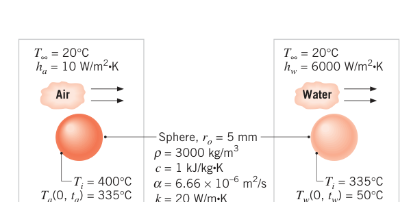
假设（Assumptions）：1. 沿 \(r\) 一维导热；2. 物性为常数。
分析（Analysis）：
- 第 1 步先算毕渥数（\(L_c = r_o/3\)）：
集总参数法可用，球内温度几乎均匀。由式 (5.5)（其中 \(A_s = 4\pi r_o^2\)，\(V = \frac{4}{3}\pi r_o^3\)，即 \(\rho Vc/(hA_s) = \rho r_o c/(3h)\)）：
- 第 2 步再算毕渥数：
集总参数法不适用。但第 1 步结束时球温几乎均匀，可作为第 2 步的均匀初始条件，用球的单项近似。把式 (5.53c) 反解出时间：
此时的毕渥数定义为 \(Bi = h_w r_o/k = 1.50\)（\(hr_o/k\) 而非 \(hr_o/3k\)），查表 5.1 得 \(C_1 = 1.376\)、\(\zeta_1 = 1.800\ \mathrm{rad}\)。代入：
注意 \(Fo = 0.82 > 0.2\)，单项近似合理。
点评（Comments）：
- 若第 1 步结束时球内温度分布不均匀，第 2 步就不能从均匀初态出发用单项近似。
- 第 2 步结束时的球表面温度由式 (5.53b)（\(r^* = 1\)，\(\theta_o^* = 0.095\)）：
级数解 (5.51a) 与单项近似 (5.53b) 可算 \(t > t_a\) 后球内任意位置任意时刻的温度：\((t - t_a) < 0.2 r_o^2/\alpha = 0.75\ \mathrm{s}\) 时要保留足够多项保证收敛；\((t - t_a) > 0.75\ \mathrm{s}\) 后单项近似收敛良好。算出 \(r = 0\) 与 \(r = r_o\) 的温度历史画在一起，可见表面先降温、中心滞后。 3. IHT 的 Sphere 模型可算两步；Lumped Capacitance 模型只能用于空气冷却（第 1 步）。
5.7 半无限大物体#
另一类能拿解析解的重要几何是半无限大物体（semi-infinite solid）：除一个方向外都延伸到无穷远，因而只有唯一可辨认的表面（图 5.7）。表面条件突然改变时，物体内发生瞬态一维导热。
这个理想化非常实用：可以描述大地表层的瞬态传热，也可以近似厚板的早期瞬态——表面条件刚改变、内部深处（远离表面）还来不及感知的那段时间。这段时间对应很小的傅里叶数，恰好是 5.5、5.6 节单项近似失效、完整级数又难算的区间。可以证明：厚 \(2L\) 的平壁在 \(Fo = \alpha t/L^2 \lesssim 0.2\) 时能准确按半无限大物体处理。
半无限大物体的热方程仍是式 (5.29)，初始条件为式 (5.30)，内部边界条件为
\(t = 0\) 时刻瞬间施加的三种重要表面条件都有闭式解（图 5.7）：恒定表面温度 \(T_s \ne T_i\)、恒定表面热流 \(q_o''\)、表面对流（流体 \(T_{\infty} \ne T_i\)，换热系数 \(h\)）。
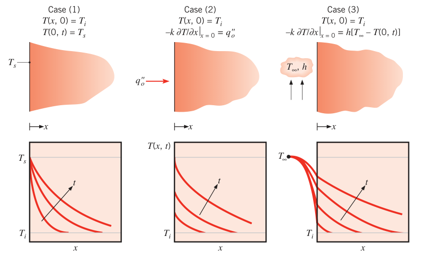
相似变量解法（情形 1 的推导）。关键在找到相似变量（similarity variable）\(\eta = x/(4\alpha t)^{1/2}\)，它把含 \(x\)、\(t\) 两个自变量的偏微分方程变成只含 \(\eta\) 的常微分方程。变换各微分算子：
代入式 (5.29)，热方程变成
表面条件（\(x = 0 \Leftrightarrow \eta = 0\)）：
而 \(x \to \infty\) 与 \(t = 0\) 都对应 \(\eta \to \infty\)，初始条件与内部边界条件合并成一条：
方程与条件都只含 \(\eta\)——相似变量成立，温度是 \(\eta\) 的唯一函数。分离变量积分两次（\(u\) 为哑变量）：
由 \(\eta = 0\) 条件得 \(C_2 = T_s\)；由 \(\eta \to \infty\) 条件得 \(C_1 = 2(T_i - T_s)/\pi^{1/2}\)。于是
其中 \(\mathrm{erf}\,\eta\) 是高斯误差函数（Gaussian error function），数值表见附录 B。三种表面条件的解汇总如下。
情形 1：恒定表面温度，\(T(0, t) = T_s\)
表面热流由 \(x = 0\) 处的傅里叶定律算出：\(q_s'' = -k\,\partial T/\partial x\,|_{x=0}\)，对 \(\mathrm{erf}\,\eta\) 求导在 \(\eta = 0\) 处得 \(1/\sqrt{\pi\alpha t}\)。注意 \(\mathrm{erf}(\eta)\) 随 \(\eta \to \infty\) 渐近到 1——任意非零时刻，处处温度都已开始偏离 \(T_i\)。这相当于边界信息以无穷大速度传播，物理上不真实，但这一傅里叶定律的局限只在极小时间尺度上才要紧（2.3 节）。
情形 2：恒定表面热流，\(q_s'' = q_o''\)
情形 3：表面对流，\(-k\,\partial T/\partial x\,|_{x=0} = h[T_{\infty} - T(0, t)]\)
余误差函数（complementary error function）定义为 \(\mathrm{erfc}\,w \equiv 1 - \mathrm{erf}\,w\)。
三种情形的温度历史（图 5.7、5.8）各有特点：
- 恒壁温（情形 1）：介质内温度单调趋近 \(T_s\)；表面温度梯度、因而表面热流按 \(t^{-1/2}\) 衰减。
- 热渗透深度（thermal penetration depth）\(\delta_p\)：温度影响显著传播到的深度。比如定义 \(\delta_p\) 为 \((T - T_s)/(T_i - T_s) = 0.90\) 的位置，由式 (5.60) 得 \(\delta_p = 2.3\sqrt{\alpha t}\)——渗透深度按 \(t^{1/2}\) 增长，热扩散率越大的材料渗得越深。（把 \(\delta_p \le L\) 反过来用，就得到"平壁可按半无限大处理"的判据 \(Fo \lesssim 0.2\)。）
- 恒热流（情形 2）：由式 (5.62)，表面温度 \(T(0, t) = T_s(t)\) 按 \(t^{1/2}\) 单调上升。
- 对流（情形 3）：表面温度与内部温度都逐渐趋近流体温度 \(T_{\infty}\)；\(T_s\) 越接近 \(T_{\infty}\)，表面热流 \(q_s''(t) = h[T_{\infty} - T_s(t)]\) 越小。\(h \to \infty\) 时表面瞬间达到流体温度（\(T_s = T_{\infty}\)），式 (5.63) 右端第二项消失，退化为情形 1——图 5.8 中最上面的曲线就是它。
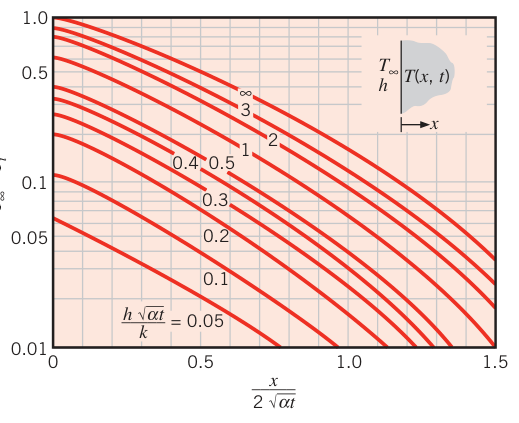
两个半无限大物体的接触。情形 1 有个有趣的变体（图 5.9）：两块初始温度均匀的半无限大物体（\(T_{A,i}\)、\(T_{B,i}\)，设 \(T_{A,i} > T_{B,i}\)）在自由表面处贴合。接触热阻可忽略时，热平衡要求接触瞬间（\(t = 0\)）两表面取同一温度 \(T_s\)，且 \(T_s\) 不随时间变——每块物体的瞬态响应与表面热流都由式 (5.60)、(5.61) 给出。界面温度由表面能量平衡确定：
代入式 (5.61)（注意 \(B\) 侧坐标方向反号）：
解出：
量 \(m = (k\rho c)^{1/2}\) 是吸热系数（thermal effusivity 的核心组合）：\(m_A > m_B\) 时 \(T_s\) 更接近 \(T_{A,i}\)，反之更接近 \(T_{B,i}\)——"热容大"的一方把界面温度拉向自己。
拓展：为什么铁扶手比木扶手凉
同在室温 20°C 的房间里，摸金属觉得凉、摸木头觉得温和——金属的 \(k\rho c\) 比木头大两个量级，按式 (5.66) 界面温度被拉向金属一侧、远离 37°C 的皮肤，热量从皮肤被抽走得又快又深。"手感的温度"其实是接触界面温度，式 (5.66) 一口气解释清楚——例 5.7 的两种混凝土脚感之差就是同一回事的工程版。
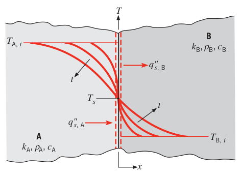
【例 5.7】赤脚踩池边，哪种水泥更烫
已知（Known）：炎热晴天，游泳池边的混凝土池面温度 \(T_d = 55^\circ\mathrm{C}\)。泳者赤脚走过干燥池面，脚底皮肤/脂肪层厚 \(L_{sf} = 3\ \mathrm{mm}\)，导热系数 \(k_{sf} = 0.3\ \mathrm{W/(m \cdot K)}\)。两种池面材料：(i) 密实石混混凝土；(ii) 轻骨料混凝土，\(\rho_{lw} = 1495\ \mathrm{kg/m^3}\)、\(c_{p,lw} = 880\ \mathrm{J/(kg \cdot K)}\)、\(k_{lw} = 0.28\ \mathrm{W/(m \cdot K)}\)。皮肤/脂肪层的密度与比热近似取液态水的值，初始温度 \(T_{sf,i} = 37^\circ\mathrm{C}\)。
求（Find）：接触 1 s 后脚底温度。
示意图（Schematic）：
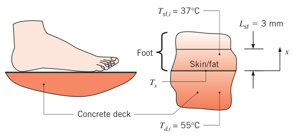
假设（Assumptions）：1. 沿 \(x\) 一维导热；2. 物性均匀为常数；3. 接触热阻可忽略。
物性（Properties）：表 A.3 石混混凝土（300 K）：\(\rho_{sm} = 2300\ \mathrm{kg/m^3}\)，\(k_{sm} = 1.4\ \mathrm{W/(m \cdot K)}\)，\(c_{sm} = 880\ \mathrm{J/(kg \cdot K)}\)。表 A.6 水（310 K）：\(\rho_{sf} = 993\ \mathrm{kg/m^3}\)，\(c_{sf} = 4178\ \mathrm{J/(kg \cdot K)}\)。
分析（Analysis）：若皮肤/脂肪层与池面都可按半无限大介质处理，接触面温度 \(T_s\) 由式 (5.66) 给出且恒定。先验证半无限大近似——算 1 s 的热渗透深度。轻骨料混凝土：
渗透深度很小，轻骨料池面可按半无限大处理。同理石混混凝土 \(\delta_{p,sm} = 1.91\ \mathrm{mm}\)；皮肤/脂肪层 \(\delta_{p,sf} = 0.62\ \mathrm{mm}\)，比 \(L_{sf} = 3\ \mathrm{mm}\) 小得多——脂肪层也按半无限大处理没问题。于是式 (5.66) 可用。轻骨料混凝土情形：
石混混凝土重复计算：
点评（Comments）：
- 轻骨料混凝土脚感更凉：石混引起的皮肤温升 \(\Delta T_{sm} = 47.8 - 37 = 10.8^\circ\mathrm{C}\)，轻骨料只有 \(\Delta T_{lw} = 43.3 - 37 = 6.3^\circ\mathrm{C}\)——差别全在 \((k\rho c)^{1/2}\)：石混的导热系数大得多。
- 1 s 的渗透深度与混凝土里石子、气孔的尺寸同量级，均匀物性假设有点勉强——预测值应视为代表性数值。
5.8 恒定表面温度或恒定表面热流的物体#
5.5、5.6 节处理了对流边界（其中 \(Bi \to \infty\) 就退化为表面温度突变）；5.7 节处理了半无限大物体的恒温、恒热流边界。本节把"恒壁温 / 恒热流"一维问题收个尾：给出一套统一的近似解，覆盖各种几何。
5.8.1 恒定温度边界条件#
把式 (5.61) 的热流写成无量纲形式（\(q^*\) 是 4.3 节引入的无量纲导热速率）：
\(L_c\) 为特征长度。代入式 (5.61)：
其中 \(Fo = \alpha t/L_c^2\)。注意半无限大物体的 \(q^*\) 与特征长度的取法无关（本来就没有第二特征尺度）。式 (5.68) 画在图 5.10a 上：\(q^* \propto Fo^{-1/2}\)，双对数图上斜率为 \(-1/2\) 的直线。
内部换热：平壁、圆柱、球。图 5.10a 还画了 \(Bi \to \infty\)（恒壁温）下三种内部几何的 \(q^*(Fo)\)（由式 5.42、5.50、5.51 配傅里叶定律生成），特征长度 \(L_c = L\)（厚 \(2L\) 平壁的半厚）或 \(r_o\)。每种几何的 \(q^*\) 初期都贴着半无限大解走，随后快速掉下来（物体趋近平衡温度、\(q_s'' \to 0\)）；表面积/体积比越大的几何掉得越早。
外部换热：各种几何。图 5.10a 还给出浸没在无限大介质（初始 \(T_i\)）中的物体表面突然变到 \(T_s\) 的结果，\(L_c = (A_s/4\pi)^{1/2}\)（4.3 节的取法）。浸没球的精确解：
所有外部情形的 \(q^*\) 在合适长度尺度下都紧贴球的曲线，且最终收敛到非零稳态值 \(q_{ss}^*\)（表 4.1 给出）——与内部情形的根本区别。
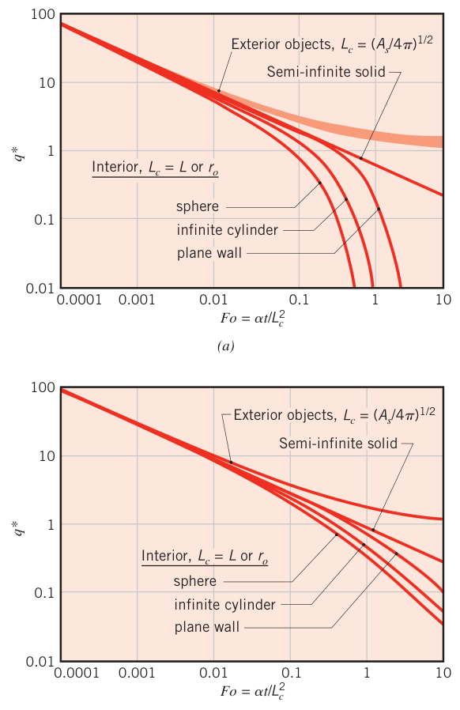
万物归一：图 5.10 里所有热响应在早期（\(Fo \lesssim 10^{-3}\)）都坍缩到半无限大解上——早期温度变化只发生在任何物体表面附近的薄层里，与内外换热无关。所以早期用式 (5.60)、(5.61) 就能预测任意物体边界薄层内的温度与热流：\(Fo \le 10^{-3}\) 时按半无限大解算的局部热流、局部温度与精确解相差约 5% 以内。
5.8.2 恒定热流边界条件#
恒定表面热流施加到物体上时，关心的往往是表面温度历史。此时式 (5.67) 分子恒定、分母 \(T_s - T_i\) 随时间增大。
半无限大物体：把式 (5.62) 取 \(x = 0\)（注意此时第二项为零），整理后与式 (5.67) 合并：
仍是 \(q^* \propto Fo^{-1/2}\)，系数不同（图 5.10b）。
内部换热：图 5.10b 的内部情形同样先贴半无限大解、后偏离（球先、圆柱次之、平壁最后）。与恒温情形的差别：偏离得没那么剧烈——恒热流下永远达不到稳态，表面温度必须持续上升。晚期（\(Fo\) 大）表面温度随时间线性增长，\(q^* \propto Fo^{-1}\)，双对数图上斜率 \(-1\)。
外部换热：浸没球在恒热流下的精确解：
它渐近到稳态值 \(q_{ss}^* = 1\)；其他形状的外部物体也先走半无限大解、后收敛到表 4.1 的 \(q_{ss}^*\)（此时式 5.67 中的 \(T_s\) 取非均匀表面温度的平均值）。
5.8.3 近似解汇总#
文献给出了覆盖图 5.10 全范围、全几何的简单近似式（表 5.2a、5.2b，按恒壁温 / 恒热流分列）。表 5.2 的骨架如下——每种几何给出长度尺度、精确式、早期（\(Fo \le 0.2\)）与晚期（\(Fo \ge 0.2\)）近似式及最大误差。
表 5.2a 恒定表面温度（\(q^* = q_s'' L_c/[k(T_s - T_i)]\)，\(Fo = \alpha t/L_c^2\)）
| 几何 | \(L_c\) | 早期近似 \(Fo \le 0.2\) | 晚期近似 \(Fo \ge 0.2\) | 最大误差 |
|---|---|---|---|---|
| 半无限大 | 任意 | 精确式 (5.68) | — | — |
| 平壁（厚 2L） | \(L\) | \(q^* \approx 1/\sqrt{\pi Fo}\) | \(q^* \approx 2\exp(-\pi^2 Fo/4)\)，\(\zeta_1 = \pi/2\) | 1.7% |
| 无限长圆柱 | \(r_o\) | \(q^* \approx 1/\sqrt{\pi Fo} - 0.50 - 0.65Fo\) | \(q^* \approx 2\exp(-\zeta_1^2 Fo)\)，\(\zeta_1 = 2.4050\) | 0.8% |
| 球 | \(r_o\) | \(q^* \approx 1/\sqrt{\pi Fo} - 1\) | \(q^* \approx 2\exp(-\zeta_1^2 Fo)\)，\(\zeta_1 = \pi\) | 6.3% |
| 外部球 | \(r_o\) | 精确式 (5.69) | — | — |
| 其他外部形状（表 4.1） | \((A_s/4\pi)^{1/2}\) | 精确式 (5.69) | — | 7.1% |
表 5.2b 恒定表面热流（\(q^* = q_s'' L_c/[k(T_s - T_i)]\)，分母中 \(T_s(t)\) 是瞬时表面温度）
| 几何 | \(L_c\) | 早期近似 \(Fo \le 0.2\) | 晚期近似 \(Fo \ge 0.2\) | 最大误差 |
|---|---|---|---|---|
| 半无限大 | 任意 | 精确式 (5.70) | — | — |
| 平壁（厚 2L） | \(L\) | \(\left(\sqrt{\pi Fo} + \tfrac{\pi}{4}\right)^{-1}\) | \(\left(\sqrt{3Fo + \tfrac{1}{5}}\right)^{-1}\) | 5.3% |
| 无限长圆柱 | \(r_o\) | \(\left(\tfrac{1}{2\sqrt{\pi Fo}} - \tfrac{\pi}{8}\right)^{-1}\) | \(\left(\sqrt{2Fo + \tfrac{1}{4}}\right)^{-1}\) | 2.1% |
| 球 | \(r_o\) | \(\left(\tfrac{1}{2\sqrt{\pi Fo}} - \tfrac{\pi}{8}\right)^{-1}\) | \(\left(\sqrt{Fo + \tfrac{1}{3}}\right)^{-1}\) | 4.5% |
| 外部球 | \(r_o\) | 精确式 (5.71) | — | 3.2% |
| 其他外部形状（表 4.1） | \((A_s/4\pi)^{1/2}\) | 精确式 (5.71) | — | — |
【例 5.8】早期换热量比 Q/Q0
已知（Known）：表面温度恒定的平壁（厚 \(2L\)）。
求（Find）：\(Fo \le 0.2\) 范围内，从等温表面传进平壁的能量比 \(Q/Q_o\) 关于 \(Fo = \alpha t/L^2\) 的表达式。
示意图（Schematic）：
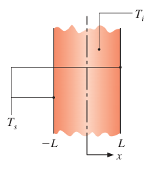
假设（Assumptions）：1. 一维导热；2. 物性为常数；3. 表 5.2a 近似式成立。
分析（Analysis）：由表 5.2a（平壁，\(Fo \le 0.2\)）：
即
\(Q\) 是 0 到 \(t\) 累积进入壁面的热量：
点评（Comments）：
- \(Fo\) 小时精确的 \(Q/Q_o\) 要算级数的许多项，用近似式简化太多。
- \(Fo = 0.2\) 时 \(Q/Q_o \approx 0.5\)——平壁全部可能内能变化的一半发生在 \(Fo < 0.2\) 的早期。
- 傅里叶数虽是无量纲时间，但对"导热传热与固体贮能同时进行"的问题有更深的物理含义：它度量任一时刻已贮存在固体中的能量份额。
【例 5.9】纳米壳肿瘤热疗
已知（Known）：一种癌症疗法用尺寸与成分精确设计的复合纳米壳：先接上抗体注入血液，抗体会把纳米壳带到并粘在癌变组织上；然后激光穿过皮肤与组织间的介质，被纳米壳吸收，加热并摧毁癌组织。设肿瘤近似为直径 \(D_t = 3\ \mathrm{mm}\) 的球，均匀渗有强吸收纳米壳。健康组织导热系数 \(k \approx 0.5\ \mathrm{W/(m \cdot K)}\)，体温 \(T_b = 37^\circ\mathrm{C}\)。肿瘤位于皮表下 \(d = 20\ \mathrm{mm}\) 处，激光热流按 \(q_l''(x) = q_{l,o}''(1 - \rho)\,\mathrm{e}^{-\kappa x}\) 衰减，皮肤反射率 \(\rho = 0.05\)，组织消光系数 \(\kappa = 0.02\ \mathrm{mm}^{-1}\)，光斑直径 \(D_l = 5\ \mathrm{mm}\)。
求（Find）：1. 肿瘤表面维持治疗温度 \(T_{t,ss} = 55^\circ\mathrm{C}\) 时，肿瘤向周围健康组织的稳态传热速率；2. 维持该温度所需的激光功率；3. 忽略向周围组织的传热时，肿瘤温度升到距 \(55^\circ\mathrm{C}\) 差 3°C（\(T_t = 52^\circ\mathrm{C}\)）所需时间；4. 忽略肿瘤自身热容、但计及向周围组织传热时，肿瘤表面升到 \(T_t = 52^\circ\mathrm{C}\) 所需时间。
示意图（Schematic）：
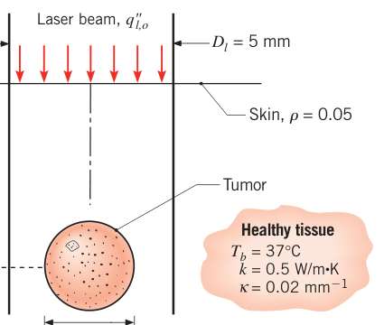
假设（Assumptions）：1. 沿径向一维导热；2. 物性为常数；3. 健康组织可按无限大介质处理；4. 肿瘤吸收全部入射激光；5. 肿瘤呈集总参数行为；6. 忽略潜在纳米尺度传热效应；7. 忽略血液灌流。
物性（Properties）：表 A.6，水（320 K）：\(\rho = 989.1\ \mathrm{kg/m^3}\)，\(c_p = 4180\ \mathrm{J/(kg \cdot K)}\)。
分析（Analysis）：
- 稳态散热用表 4.1 情形 12（无限介质中的等温球，\(q = 2\pi k D_t (T_{t,ss} - T_b)\)）：
- 激光被肿瘤投影面积 \(\pi D_t^2/4\) 吸收。对肿瘤做能量平衡：吸收的激光 = 导给健康组织的热（\(q = 0.170\ \mathrm{W}\)）：
激光功率 \(P_l = q_{l,o}''\,\pi D_l^2/4\)，消去 \(q_{l,o}''\)：
- 忽略向组织散热，肿瘤是纯集总参数问题。式 (5.14) 写成：
左边净输入恒定，分离变量积分：
- 计及向组织传热、忽略肿瘤热容时，用浸没球恒热流关系式 (5.71)：
试差解出 \(Fo = 10.3\)。热扩散率 \(\alpha = k/\rho c_p = 0.50\ \mathrm{W/(m \cdot K)}/(989.1\ \mathrm{kg/m^3} \times 4180\ \mathrm{J/(kg \cdot K)}) = 1.21 \times 10^{-7}\ \mathrm{m^2/s}\)。注意此处的傅里叶数按外部球取 \(L_c = (A_s/4\pi)^{1/2} = D_t/2\)，即 \(Fo = 4\alpha t/D_t^2\)：
点评（Comments）：
- 分析没算血液灌流——血流会把加热的流体带走、送来较凉的血液，达到目标温度所需功率要比 0.74 W 更大。
- 不同尺寸肿瘤所需激光功率（按第 1、2 问方法算）显示：肿瘤越小，需要的激光功率越大——有点反直觉。加热肿瘤本身的热损失正比于直径 \(D_t\)，但激光是按光斑功率密度入射的，小肿瘤的投影面积按 \(D_t^2\) 缩小，能截获的能量份额反而更少，损失的功率要从更大的总功率里补。
- 要算肿瘤+周围组织的真实升温时间，需要组织热扩散方程与肿瘤温度历史的耦合数值解。可以看出计及周围组织后所需时间（192 s 量级）远大于孤立肿瘤自升温（5.16 s）——加热要暖热一大片体积，而肿瘤自身热容只限于它的尺寸。实际总时间略大于 192 s。
- 温度会传到离肿瘤相当远的地方，"无限大介质"假设要用数值结果回头检验。
5.9 周期性加热#
前面处理的边界条件都是阶跃或恒定。很多应用里边界条件随时间周期变化：脉冲激光热处理、太阳照射的天然昼夜循环等。
看图 5.11a 的半无限大物体，表面温度按 \(T(0, t) = T_i + \Delta T\sin\omega t\) 变化。式 (5.29) 配内部条件式 (5.56) 的解为
此解适用于已进入准稳态（quasi-steady state）之后的时期：所有温度围绕一个不随时间变化的平均值周期波动。物体内各处波动的相位滞后于表面温度，振幅随离表面的距离按指数衰减。
与热渗透深度的定义一致，把振幅衰减到表面振幅约 10% 的深度定义为 \(\delta_p\)，得
表面热流由 \(x = 0\) 处的傅里叶定律：
表面热流也是周期的，时间平均值为零，且相位超前表面温度 \(\pi/4\)。
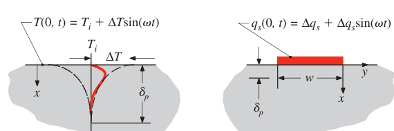
周期加热也有二维形态（图 5.11b）：贴在半无限大固体上的窄条受正弦加热 \(q_s = \Delta q_s + \Delta q_s\sin\omega t\)。同样进入准稳态。窄条加热振幅与窄条温度响应振幅的关系可近似为
\(C_1\) 取决于窄条与基底界面的接触热阻，\(\Delta T\) 是长 \(L\)、宽 \(w\) 的矩形窄条的空间平均温度振幅，热流按空间均匀处理，近似适用于 \(L \gg w\)。由于热量的横向扩展，图 5.11b 的热渗透深度比 5.11a 小：\(\delta_p \approx \sqrt{\alpha/\omega}\)。
【例 5.10】3ω 法测纳米结构材料的导热系数
已知（Known）：用光刻法把长金属条（厚 3000 Å，\(w = 100\ \mu\mathrm{m}\)，\(L = 3.5\ \mathrm{mm}\)）沉积在厚 \(d = 300\ \mu\mathrm{m}\) 的新材料样品表面，金属条经两个连接焊盘通周期电流加热：\(q_s(t) = \Delta q_s + \Delta q_s\sin(\omega t)\)，\(\Delta q_s = 3.5\ \mathrm{mW}\)。金属条的空间平均温度由其电阻随温度的变化实验测得：在较低频率 \(\omega = 2\pi\ \mathrm{rad/s}\) 处振幅 \(\Delta T = 1.37\ \mathrm{K}\)，在 \(\omega = 200\pi\ \mathrm{rad/s}\) 处 \(\Delta T = 0.71\ \mathrm{K}\)。传统版本材料的密度与比热为 \(3100\ \mathrm{kg/m^3}\)、\(820\ \mathrm{J/(kg \cdot K)}\)。
求（Find）：纳米结构材料的导热系数。
示意图（Schematic）：
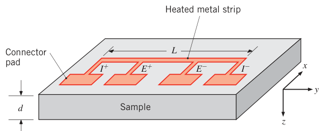
假设（Assumptions）：1. \(x\)、\(z\) 两方向二维瞬态导热；2. 物性为常数；3. 金属条与样品顶面的辐射、对流损失可忽略；4. 纳米结构材料样品为半无限大物体；5. 金属条与材料界面热流均匀。
分析（Analysis）：把两组 \((\Delta T, \omega)\) 代入式 (5.74)，得到两个方程：
两个未知数 \(k\)、\(C_2\)，联立求解：
热扩散率用传统材料的密度、比热算：\(\alpha = k/\rho c_p = 1.11\ \mathrm{W/(m \cdot K)}/(3100\ \mathrm{kg/m^3} \times 820\ \mathrm{J/(kg \cdot K)}) = 4.37 \times 10^{-7}\ \mathrm{m^2/s}\)。热渗透深度 \(\delta_p \approx \sqrt{\alpha/\omega}\)：\(\omega = 2\pi\ \mathrm{rad/s}\) 时 \(\delta_p = 260\ \mu\mathrm{m}\)，\(\omega = 200\pi\ \mathrm{rad/s}\) 时 \(\delta_p = 26\ \mu\mathrm{m}\)。
点评（Comments）：
- 这套实验技术叫 3ω 法（3ω method），广泛用于微尺度器件与纳米结构材料的导热系数测量。
- 该技术测的是围绕均值（约等于环境温度）波动的温度，所以对金属条顶部的辐射损失不敏感；界面接触热阻的影响也在两个频率的测量中相互抵消。
- 大多数固体的比热与密度对纳米结构不敏感，可直接用传统材料的值。
- 渗透深度小于样品厚度（\(300\ \mu\mathrm{m}\)），半无限大处理成立；样品更薄就得用更高的加热频率。
5.10 有限差分法#
解析解只适用于简单几何与边界条件。几何或边界复杂时，只能上有限差分（或有限元）方法。4.4 节的稳态差分法可以直接推广到瞬态问题。本节讨论显式与隐式两种格式。
5.10.1 热方程的离散化：显式格式#
再看图 4.4 的二维系统。常物性、无内生成的瞬态热方程（式 2.21）：
空间导数用 4.27、4.28 的中心差分；节点位置仍用下标 \(m\)、\(n\)。时间也要离散：引入整数 \(p\)，
时间导数用相邻时刻的温差近似：
上标 \(p\) 表示时刻，差分用新时刻（\(p+1\)）与前一时刻（\(p\)）的温度。
显式格式（explicit method）里，空间导数中的温度全部取前一时刻 \(p\) 的值（式 5.77 相当于时间导数的前向差分）。二维内节点 \((m, n)\) 的显式差分方程为
设 \(\Delta x = \Delta y\)，解出新时刻温度：
其中 \(Fo\) 是差分形式的傅里叶数：
一维系统（沿 \(x\)）的内节点方程退化为
显式的含义：新时刻的未知节点温度完全由前一时刻的已知节点温度决定，逐点直接可算。从 \(t = 0\)（\(p = 0\)）的初始条件出发，先算 \(t = \Delta t\)（\(p = 1\)）的所有内节点，再算 \(p = 2\)……温度场就这样以 \(\Delta t\) 为步长沿时间步进（marching）。
精度随 \(\Delta x\)、\(\Delta t\) 减小而提高，计算量随之增大。\(\Delta x\) 按精度与计算量的折中选定后，\(\Delta t\) 就不能独立选取了——它受稳定性要求约束。
稳定性判据（stability criterion）。瞬态问题的解应随时间连续趋近稳态值。但显式格式可能产生数值振荡——物理上不可能的振荡，甚至发散。为避免错误结果，\(\Delta t\) 必须低于某个与 \(\Delta x\) 等参数相关的上限。判据的来源：要求差分方程中"本节点前一时刻温度 \(T_{m,n}^{p}\)"的系数非负。把方程整理成式 (5.79)、(5.81) 的形状，读出系数即可：
一维内节点要求 \(1 - 2Fo \ge 0\)，即
二维内节点要求 \(1 - 4Fo \ge 0\)，即
给定 \(\Delta x\) 与 \(\alpha\)，这两个判据给出 \(\Delta t\) 的上限。
能量平衡法。式 (5.79)、(5.81) 也能像 4.4.3 节那样对节点控制体做能量平衡推出来。计入热能储存，一般形式为
约定所有热流方向都指向节点。以图 5.12 的一维表面节点为例——为更准地捕捉表面附近的状态，表面节点控制体厚度取内节点的一半。设表面从相邻流体对流吸热、无生成：
解出 \(T_0^{p+1}\)。注意到 \(\frac{2h\Delta t}{\rho c\Delta x} = 2\left(\frac{h\Delta x}{k}\right)\left(\frac{\alpha\Delta t}{\Delta x^2}\right) = 2Bi\,Fo\)，合并含 \(T_0^{p}\) 的项：
差分形式的毕渥数：
要求 \(T_0^{p}\) 的系数非负：
即
整个求解要同时用内节点方程 (5.81) 与表面节点方程 (5.85)，取两者中更严的判据。\(Bi \ge 0\)，式 (5.87) 限制的 \(Fo\) 上限总不高于式 (5.82)——所以有对流边界时按式 (5.87) 选 \(\Delta t\)。
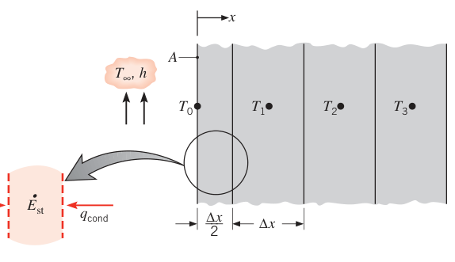
几种常见几何的显式差分方程汇总在表 5.3a（二维，\(\Delta x = \Delta y\)），每条都能用能量平衡法自行推导——建议至少验证一条。
表 5.3a 瞬态二维有限差分方程：显式格式（\(\Delta x = \Delta y\)，\(Bi = h\Delta x/k\)）
| 节点类型 | 显式方程 | 稳定性判据 |
|---|---|---|
| 内节点 | \(T_{m,n}^{p+1} = Fo(T_{m+1,n} + T_{m-1,n} + T_{m,n+1} + T_{m,n-1}) + (1 - 4Fo)T_{m,n}\) | \(Fo \le 1/4\) |
| 对流平表面节点 | \(T_{m,n}^{p+1} = Fo(2T_{m-1,n} + T_{m,n+1} + T_{m,n-1} + 2Bi\,T_{\infty}) + (1 - 4Fo - 2Bi\,Fo)T_{m,n}\) | \(Fo(2 + Bi) \le 1/2\) |
| 对流内角节点 | \(T_{m,n}^{p+1} = \frac{2}{3}Fo(T_{m+1,n} + 2T_{m-1,n} + 2T_{m,n+1} + T_{m,n-1} + 2Bi\,T_{\infty}) + (1 - 4Fo - \frac{4}{3}Bi\,Fo)T_{m,n}\) | \(Fo(3 + Bi) \le 3/4\) |
| 对流外角节点 | \(T_{m,n}^{p+1} = 2Fo(T_{m-1,n} + T_{m,n-1} + 2Bi\,T_{\infty}) + (1 - 4Fo - 4Bi\,Fo)T_{m,n}\) | \(Fo(1 + Bi) \le 1/4\) |
表中各方程右端邻点温度均取 \(p\) 时刻值。绝热表面（或对称面）的方程与判据：令 \(Bi = 0\) 即得。
【例 5.11】核燃料元件的功率阶跃
已知（Known）：核反应堆燃料元件为厚 \(2L = 20\ \mathrm{mm}\) 的平板，两表面对流冷却，\(h = 1100\ \mathrm{W/(m^2 \cdot K)}\)，\(T_{\infty} = 250^\circ\mathrm{C}\)。正常运行时元件内均匀生成热 \(\dot{q}_1 = 10^7\ \mathrm{W/m^3}\)。生成率突然升到 \(\dot{q}_2 = 2 \times 10^7\ \mathrm{W/m^3}\)。用显式有限差分法求 1.5 s 后元件内的温度分布。物性 \(k = 30\ \mathrm{W/(m \cdot K)}\)，\(\alpha = 5 \times 10^{-6}\ \mathrm{m^2/s}\)。
求（Find）：功率阶跃 1.5 s 后的温度分布。
示意图（Schematic）：
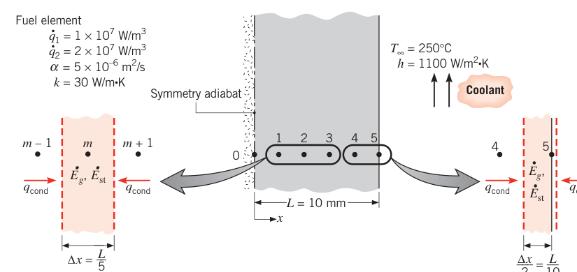
假设（Assumptions）：1. 沿 \(x\) 一维导热；2. 生成均匀；3. 物性为常数。
分析（Analysis）：取空间步长 \(\Delta x = 2\ \mathrm{mm}\)。中面对称，节点 0–5 共 6 个未知温度（0 在中面、5 在表面，表面节点控制体半厚）。对内节点 \(m\) 用能量平衡法（式 5.84）：
解出并整理（\(Fo = \alpha\Delta t/(\Delta x)^2\)）：
节点 0（中面）取 \(T_{m-1}^{p} = T_{m+1}^{p}\)（对称），节点 1、2、3、4 直接用。对表面节点 5（控制体半厚）：
最严的稳定性判据来自式 (2)：\(Fo(1 + Bi) \le 1/2\)。先算
于是 \(Fo \le 0.466\)，对应
留足余量选 \(\Delta t = 0.3\ \mathrm{s}\)，对应 \(Fo = 0.375\)。代入数值（\(\dot{q} = \dot{q}_2 = 2 \times 10^7\ \mathrm{W/m^3}\)，\(\dot{q}(\Delta x)^2/k = 2.67^\circ\mathrm{C}\)，\(Bi\,T_{\infty} + \dot{q}(\Delta x)^2/(2k) = 19.67^\circ\mathrm{C}\)），节点方程为
步进的初值 = 阶跃前的稳态分布。由 \(\dot{q}_1\) 的稳态解（式 3.47、3.51）：
以此填入表格第 0 行，按节点方程逐步推进：
| \(p\) | \(t\)（s） | \(T_0\) | \(T_1\) | \(T_2\) | \(T_3\) | \(T_4\) | \(T_5\) |
|---|---|---|---|---|---|---|---|
| 0 | 0 | 357.58 | 356.91 | 354.91 | 351.58 | 346.91 | 340.91 |
| 1 | 0.3 | 358.08 | 357.41 | 355.41 | 352.08 | 347.41 | 341.41 |
| 2 | 0.6 | 358.58 | 357.91 | 355.91 | 352.58 | 347.91 | 341.88 |
| 3 | 0.9 | 359.08 | 358.41 | 356.41 | 353.08 | 348.41 | 342.35 |
| 4 | 1.2 | 359.58 | 358.91 | 356.91 | 353.58 | 348.89 | 342.82 |
| 5 | 1.5 | 360.08 | 359.41 | 357.41 | 354.07 | 349.37 | 343.27 |
（新稳态对照：\(T_0 = 465.15^\circ\mathrm{C}\)，\(T_5 = 431.82^\circ\mathrm{C}\)。）
点评（Comments）：
- 1.5 s 时元件还处在瞬态初期，要继续算下去才能到新稳态——约 250 s 后到达。用极限步长（\(\Delta t = 0.373\ \mathrm{s}\)）可省一点计算时间但损精度；追求精度应减小 \(\Delta t\) 直到结果不再变化。
- 本题可用 IHT 的 Finite-Difference Equations, One-Dimensional, Transient 工具或 FEHT 求解。
5.10.2 热方程的离散化：隐式格式#
显式格式计算方便，但 \(\Delta t\) 受稳定性限制——经常被迫用极小的 \(\Delta t\)，算到最后时刻要很多步。隐式格式（implicit method）把这限制解除了：时间导数仍用式 (5.77)，但空间导数中的温度全部取新时刻 \(p+1\)（式 5.77 相当于后向差分）。二维内节点的隐式差分方程为
设 \(\Delta x = \Delta y\)，整理：
新时刻的节点温度互相耦合——每个时刻都要联立求解全部节点方程（高斯–赛德尔迭代或矩阵求逆，见 4.5 节与附录 D），然后再向下一时刻步进。
隐式格式相对显式的关键优势：无条件稳定（unconditionally stable）——对一切 \(\Delta x\)、\(\Delta t\) 都稳定，没有限制。于是可以用大 \(\Delta t\) 减少计算量，精度损失很小。当然为了最高精度，\(\Delta t\) 仍应小到结果与继续减小无关。
隐式方程同样可用能量平衡法推。图 5.12 的表面节点：
一维内节点：
其他几何的隐式方程汇总在表 5.3b。
表 5.3b 瞬态二维有限差分方程：隐式格式（\(\Delta x = \Delta y\)；无稳定性限制）
| 节点类型 | 隐式方程 |
|---|---|
| 内节点 | \((1 + 4Fo)T_{m,n}^{p+1} - Fo(T_{m+1,n} + T_{m-1,n} + T_{m,n+1} + T_{m,n-1})^{p+1} = T_{m,n}^{p}\) |
| 对流平表面节点 | \((1 + 2Fo(2 + Bi))T_{m,n}^{p+1} - Fo(2T_{m-1,n} + T_{m,n+1} + T_{m,n-1})^{p+1} = T_{m,n}^{p} + 2Bi\,Fo\,T_{\infty}\) |
| 对流内角节点 | \((1 + 4Fo(1 + \tfrac{1}{3}Bi))T_{m,n}^{p+1} - \tfrac{2}{3}Fo(T_{m+1,n} + 2T_{m-1,n} + 2T_{m,n+1} + T_{m,n-1})^{p+1} = T_{m,n}^{p} + \tfrac{4}{3}Bi\,Fo\,T_{\infty}\) |
| 对流外角节点 | \((1 + 4Fo(1 + Bi))T_{m,n}^{p+1} - 2Fo(T_{m-1,n} + T_{m,n-1})^{p+1} = T_{m,n}^{p} + 4Bi\,Fo\,T_{\infty}\) |
【例 5.12】铜板的辐射加热：显式、隐式与解析解对比
已知（Known）：厚铜板初始温度均匀 20°C，一个表面突然受辐照，净热流恒定 \(q_o'' = 3 \times 10^5\ \mathrm{W/m^2}\)。取 \(\Delta x = 75\ \mathrm{mm}\)，分别用显式与隐式有限差分法求 2 min 后受照表面及距表面 150 mm 处的温度，并与解析解比较。
求（Find）：1. 显式差分求 \(t = 2\ \mathrm{min}\) 的表面温度与 150 mm 处温度；2. 隐式差分重复；3. 解析解。
示意图（Schematic）：
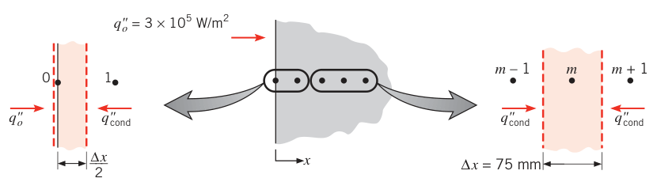
假设（Assumptions）：1. 沿 \(x\) 一维导热；2. 解析解中厚板按恒热流半无限大物体处理；差分解中远端边界 \(T(x \to \infty) = T_i\) 的实施见下文；3. 物性为常数。
物性（Properties）：表 A.1，铜（300 K）：\(k = 401\ \mathrm{W/(m \cdot K)}\)，\(\alpha = 117 \times 10^{-6}\ \mathrm{m^2/s}\)。
分析（Analysis）：
- 显式。对表面节点控制体做能量平衡（辐照热流 + 内侧导热 = 储存）：
内节点用式 (5.81)。表面与内节点共用判据 \(Fo \le 1/2\)。取极限值 \(Fo = 1/2\)（方程最简）：
节点方程：
步进结果：
| \(p\) | \(t\)（s） | \(T_0\) | \(T_1\) | \(T_2\) | \(T_3\) | \(T_4\) |
|---|---|---|---|---|---|---|
| 0 | 0 | 20 | 20 | 20 | 20 | 20 |
| 1 | 24 | 76.1 | 20 | 20 | 20 | 20 |
| 2 | 48 | 76.1 | 48.1 | 20 | 20 | 20 |
| 3 | 72 | 104.2 | 48.1 | 34.0 | 20 | 20 |
| 4 | 96 | 104.2 | 69.1 | 34.0 | 27.0 | 20 |
| 5 | 120 | 125.2 | 69.1 | 48.1 | 34.0 | 27.0 |
2 min 后：\(T_0 = 125.2^\circ\mathrm{C}\)，\(T_2 = 48.1^\circ\mathrm{C}\)。
可以看出，每步进一格就多一个节点离开初温——远端边界条件 \(T(x \to \infty) = T_i\) 无需正式实施。同一节点在相邻时刻温度重复（如 \(T_0\) 在 24 s 与 48 s 同值）是取极限 \(Fo\) 值的固有伪象，真实物理是连续变化；减小 \(Fo\) 可削弱伪象、提高精度。改用 \(Fo = 1/4\)（\(\Delta t = 12\ \mathrm{s}\)）重算：
结果 2 min 后：\(T_0 = 118.8^\circ\mathrm{C}\)，\(T_2 = 44.4^\circ\mathrm{C}\)——重复温度消失，热渗透更深（到节点 6 而非节点 3）。没有精确解时可继续减小 \(Fo\) 直到结果不再变。
- 隐式。表面节点能量平衡的隐式形式：
内节点用式 (5.97)。仍取 \(Fo = 1/2\)（\(\Delta t = 24\ \mathrm{s}\)）：
与显式不同，隐式每个时刻要联立解所有节点方程，节点数必须有限、最后一个节点要加边界条件。从显式结果看，2 min 时影响还没传到节点 9，所以取 9 个节点 \(T_0, \dots, T_8\)，第 9 节点数值实施为 \(T_9 = 20^\circ\mathrm{C}\)。方程组写成矩阵形式 \([A][T] = [C]\)：\([A]\) 的对角线为 2（首行）、4（内行），邻对角线为 \(-1\)；\([C]\) 每步由前一时刻温度更新：\(C_0 = 56.1 + T_0^{p}\)，\(C_m = 2T_m^{p}\)（\(m = 1, \dots, 7\)），\(C_8 = 2T_8^{p} + T_9^{p+1}\)。步进五次到 120 s：
- 解析解。厚板按恒热流半无限大物体处理，用式 (5.62)。表面（\(x = 0\)）：
内部 \(x = 0.15\ \mathrm{m}\)：
点评（Comments）：
- 三种近似与精确解对比：
| 方法 | \(T_0 = T(0, 120\ \mathrm{s})\)（°C） | \(T_2 = T(0.15\ \mathrm{m}, 120\ \mathrm{s})\)（°C） |
|---|---|---|
| 显式（\(Fo = 1/2\)） | 125.2 | 48.1 |
| 显式（\(Fo = 1/4\)） | 118.8 | 44.4 |
| 隐式（\(Fo = 1/2\)） | 114.7 | 44.2 |
| 精确解 | 120.0 | 45.4 |
最准的是 \(Fo = 1/4\) 的显式——它的 \(\Delta t\) 比另外两种小一半。虽然显式用极限 \(Fo\) 最省事，精度却常常不能令人满意。 2. 粗网格（\(\Delta x = 75\ \mathrm{mm}\)）与大步长（\(\Delta t = 24, 12\ \mathrm{s}\)）都拉低了精度。隐式取 \(\Delta x = 18.75\ \mathrm{mm}\)、\(\Delta t = 6\ \mathrm{s}\)（\(Fo = 2.0\)，隐式稳定不受限）重算：\(T_0 = 119.2^\circ\mathrm{C}\)、\(T_2 = 45.3^\circ\mathrm{C}\)，与解析解吻合良好。\(t = 120\ \mathrm{s}\) 时，只要板厚超过约 500 mm，半无限大假设就仍然成立。 3. 系数矩阵 \([A]\) 是三对角矩阵（tridiagonal matrix）——除主对角线及其两侧外全为零，这是一维导热问题的特征。 4. 更一般的辐射加热（表面突然暴露于高温大环境 \(T_{sur}\)）会在表面节点方程里引入 \(\varepsilon\sigma[T_{sur}^4 - (T_0^{p})^4]\) 的非线性项；可按式 (1.9) 用辐射换热系数 \(h_r\) 线性化后按常规求解，只是 \(h_r\) 每步都要更新，且稳定性判据里要计入辐射毕渥数 \(Bi_r = h_r\Delta x/k\)。隐式则要在 \(p+1\) 时刻算 \(h_r\)，每步迭代。 5. 本题在 IHT 与 FEHT 中都有现成模型。
5.11 小结#
瞬态导热的求解路线就一句：先算毕渥数。\(Bi \ll 1\)，用集总参数法，计算量最小、结果可靠；\(Bi\) 不小，就得计空间效应——平壁、无限长圆柱、球、半无限大物体都有现成的解析结果（方程与图线），会用即可；几何与边界再复杂，上有限差分这类数值方法。
用下面的自测问题检验理解（每个都能从本章找到答案）：
原书章末自测问题（5.11 节复习用）
- 什么条件下能用集总参数法预测固体对热环境突变的瞬态响应？
- 毕渥数的物理解释是什么？
- 热固体被空气强制对流冷却与被水冷却，哪种情形集总参数法更适用？空气强制对流与空气自然对流呢？
- 铜件与铝件的冷却，哪个集总参数法更适用？氮化硅与玻璃呢？
- 集总参数固体瞬态响应的时间常数由哪些参数决定？增大对流换热系数响应变快还是变慢？增大密度或比热呢？
- 平壁、长圆柱、球表面对流的一维瞬态导热，可用哪几个无量纲参数简化？各怎么定义？
- 为什么半无限大解在早期适用于任何几何？
- 傅里叶数的物理解释是什么？
- 平壁、长圆柱、球用单项近似需要满足什么要求？瞬态过程的哪个阶段不满足？
- 两表面对流条件相同的平壁瞬态加热/冷却，与"一表面对流、另一面绝热"的平壁，有什么共同点？
- 表面温度突变的平壁、长圆柱、球，怎么用单项近似求瞬态响应？
- 一维瞬态导热的"半无限大物体"理想化意味着什么？什么条件下可用于平壁？
5S 补充：一维解的图形用法（海斯勒图）与多维乘积解#
原书 7 版把两项工具放在配套网站的补充节：5S.1 一维单项近似的图形表示（海斯勒图族）与 5S.2 多维系统的解析解（乘积解）；印刷版正文在 5.5.2、5.6.2 只留了一句指引。图形与公式完全等价——图上的每条曲线都由式 (5.43)、(5.44)、(5.49) 决定。这里把用法整理齐，做题、考试都靠它。
海斯勒图怎么读#
每种几何（平壁 / 无限长圆柱 / 球）一套三张图：
- 中心温度图（母图）：横轴 \(Fo\)，纵轴 \(\theta_o^*\)，\(Bi\) 为参数的一族曲线——把式 (5.44) 画出来。半对数坐标，早期曲线陡、晚期渐直。
- 位置修正图：横轴 \(Bi\,(1 - x^*)\)（平壁）或 \(Bi\,(1 - r^*)\)（圆柱、球），纵轴 \(\theta/\theta_o^*\)，单条曲线——把 \(\cos(\zeta_1 x^*)\)、\(J_0(\zeta_1 r^*)\)、\(\sin(\zeta_1 r^*)/(\zeta_1 r^*)\) 随位置、\(Bi\) 的变化打包。
- 能量比图：横轴 \(Bi^2 Fo\)，纵轴 \(Q/Q_o\)，\(Bi\) 为参数——把式 (5.49)、(5.54)、(5.55) 画出来。
使用步骤（求任意位置任意时刻的温度）：
- 算 \(Bi = hL/k\)（平壁用半厚 \(L\)，圆柱、球用半径 \(r_o\)）与 \(Fo = \alpha t/L^2\)；
- 查中心温度图（或用表 5.1 系数代入式 5.44）得 \(\theta_o^*\)；
- 算 \(Bi(1 - x^*)\)，查位置修正图得 \(\theta/\theta_o^*\)，两者相乘得 \(\theta^*\)；
- 还原有量纲温度：\(T = T_{\infty} + \theta^*(T_i - T_{\infty})\)。求换热量时用能量比图（或式 5.49、5.54、5.55）得 \(Q/Q_o\)，乘 \(Q_o = \rho c V(T_i - T_{\infty})\)。
适用范围就是单项近似的适用范围：\(Fo > 0.2\)。表 5.1 的系数（\(\zeta_1\)、\(C_1\)）与图线完全等价，手算优先用系数代入公式，图线用来快速估算与核对。
拓展：为什么修正图横轴取 Bi(1 - x*)
表面温度与中心温度之比只取决于 \(\zeta_1 x^*\)，而 \(\zeta_1\) 又由 \(Bi\) 决定。数学上可以把两个变量 \((Bi, x^*)\) 组合成单变量 \(Bi(1 - x^*)\)——对三种几何都能把"位置 × 毕渥数"的修正近似压到一条曲线上。这就是海斯勒图能把一族曲线简化成"母图 + 单条修正线"的原因。现代做法是直接代入式 (5.43)、(5.52)、(5.53) 与表 5.1 系数（或用 IHT 模型），精度更高。
多维问题的乘积解#
初始温度均匀、介质均匀、初始瞬态的多维导热问题，其解可以写成几个一维解的乘积（product solution）：
其中 \(P\)、\(C\)、\(S\) 分别记平壁（半厚 \(L\)）、无限长圆柱、半无限大物体的一维解。常用组合：
| 几何 | 乘积解构成 |
|---|---|
| 二维直角（半无限大的角区） | \(P(x)\cdot P(y)\) |
| 无限长矩形杆 | \(P(x)\cdot P(y)\) |
| 长方体 | \(P(x)\cdot P(y)\cdot P(z)\) |
| 半无限大平板 | \(P(x)\cdot S(y)\) |
| 半无限大矩形棒 | \(P(x)\cdot P(y)\cdot S(z)\) |
| 半无限长圆柱 | \(C(r)\cdot S(z)\) |
| 短圆柱（两端对流） | \(C(r)\cdot P(z)\) |
| 半无限大介质中的短圆柱 | \(C(r)\cdot P(z)\cdot S(x)\) |
规则的本质：热方程是线性的，初始条件（均匀 \(T_i\)）与对流边界都能按坐标方向分解，所以各方向的一维响应互不干扰、直接相乘。半无限大介质本身就当"一维因子 \(S\)"参与乘积；浸没在无限介质中的外部物体则用 5.8 节的 \(q^*\) 处理。乘积解只能用单项近似区间（各一维因子都要求 \(Fo > 0.2\) 才与图形配套），早期瞬态要用完整级数或半无限大解。
坑与陷阱#
8 个容易踩的坑
- 两个 Bi 的特征长度不一样：集总判据 (5.10) 用 \(L_c = V/A_s\)（平壁 \(L\)、圆柱 \(r_o/2\)、球 \(r_o/3\)，保守取真实半径）；一维解（表 5.1、海斯勒图）的 \(Bi = hL/k\) 用平壁半厚、圆柱与球真实半径。例 5.6 第 2 步的 \(Bi = 1.50\) 就是 \(h_w r_o/k\)——沿用 \(r_o/3\) 会查错系数。
- 先算 Bi 再选方法：拿到瞬态问题第一动作是 \(Bi = hL_c/k\)。\(Bi \le 0.1\) 走集总参数法；\(Bi > 0.1\) 直接跳到一维解或数值法——用集总参数法硬算大 \(Bi\) 问题（例 5.5 的 0.313）会错得很离谱。
- 单项近似有下界：\(Fo > 0.2\) 才能砍级数取一项。早期瞬态（\(Fo < 0.2\)）要用完整级数，或者换半无限大解（\(Fo \lesssim 0.2\) 的厚壁）。例 5.6 点评里"0.75 s 内要保留多项"说的就是这件事。
- 半无限大解是早期近似：热渗透深度 \(\delta_p = 2.3\sqrt{\alpha t}\) 不能超过物体厚度。反过来，厚 \(2L\) 平壁当半无限大处理的合法区间是 \(Fo \lesssim 0.2\)——时间一长热量穿透到背面，解立即失效。
- 稳定性判据取最严节点：显式格式的 \(\Delta t\) 由系数最负的节点决定。有对流边界时表面节点 \(Fo(1 + Bi) \le 1/2\) 比内节点 \(Fo \le 1/2\) 更严（\(Bi\) 大时逼近 \(Fo \le 1/4\)）；外角节点 \(Fo(1 + Bi) \le 1/4\) 更狠。全场景取最小者，否则数值振荡、发散。
- 显式取极限 Fo 的伪象：\(Fo = 1/2\) 时内节点方程变成"邻居平均"、无自身项，会出现同一节点相邻两步温度相同的怪象（例 5.12 表格），精度也差。要么减小 \(Fo\)，要么换隐式。
- 隐式稳定但要联立：隐式没有 \(\Delta t\) 限制，代价是每个时刻解一个线性方程组（一维时是三对角矩阵）。"无条件稳定"不等于"步长随便取"——精度仍然要求 \(\Delta t\) 小到结果收敛。
- 辐射让方程失去解析解：式 (5.15) 一含 \(T^4\) 就非线性能积，只能数值积分（例 5.2、5.3）。另外辐射会系统性抬高温测读数——例 5.2 的热电偶在 400°C 热管壁里把 200°C 的气流读成 218.7°C，偏 18.7°C。
速览#
- 集总参数法（内部均匀温度）：\((T - T_{\infty})/(T_i - T_{\infty}) = \exp(-t/\tau_t)\)，时间常数 \(\tau_t = \rho Vc/(hA_s) = R_t C_t\)；总换热量 \(Q = \rho Vc\,\theta_i[1 - \exp(-t/\tau_t)]\)。
- 适用判据：\(Bi = hL_c/k \le 0.1\)，\(L_c = V/A_s\)（平壁 \(L\)、圆柱 \(r_o/2\)、球 \(r_o/3\)）。拿到瞬态问题先算 \(Bi\)。
- 两个无量纲数：毕渥数 \(Bi = hL/k\)（内导热热阻与对流热阻之比），傅里叶数 \(Fo = \alpha t/L_c^2\)（无量纲时间）。集总参数下 \(\theta/\theta_i = \exp(-Bi \cdot Fo)\)。
- 无量纲化解只依赖三个参数：\(\theta^* = f(x^*, Fo, Bi)\)。
- 一维对流问题（平壁/圆柱/球）：\(Fo > 0.2\) 用单项近似 \(\theta^* = \theta_o^*\,\varphi(\zeta_1 x^*)\)，\(\theta_o^* = C_1\exp(-\zeta_1^2 Fo)\)，系数查表 5.1；总换热量 \(Q/Q_o = 1 - \frac{\sin\zeta_1}{\zeta_1}\theta_o^*\)（平壁，圆柱、球有对应式）。
- 表面温度突变 = \(Bi \to \infty\)、\(T_{\infty}\) 换成 \(T_s\)；单面对流+另一面绝热的厚 \(L\) 平壁 = 对称冷却的厚 \(2L\) 平壁。
- 半无限大物体三种表面条件：恒壁温 \(T = T_s + (T_i - T_s)\,\mathrm{erf}(x/2\sqrt{\alpha t})\)、表面热流 \(q_s'' = k(T_s - T_i)/\sqrt{\pi\alpha t}\)；恒热流与表面对流用 \(\mathrm{erfc}\) 表达式 (5.62)、(5.63)。热渗透深度 \(\delta_p = 2.3\sqrt{\alpha t}\)；厚 \(2L\) 平壁的合法区间 \(Fo \lesssim 0.2\)。
- 两半无限大固体接触的界面温度按吸热系数 \((k\rho c)^{1/2}\) 加权（式 5.66）。
- 早期（\(Fo \lesssim 10^{-3}\)）一切几何都按半无限大解处理（误差 5% 内）；恒壁温 \(q^* = 1/\sqrt{\pi Fo}\)，恒热流 \(q^* = 1/(2\sqrt{\pi Fo})\)；外部物体收敛到 \(q_{ss}^*\)（表 4.1）。
- 有限差分：显式逐点直接算但受稳定性判据限制（内节点 \(Fo \le 1/2\)（一维）或 \(1/4\)（二维）；对流表面 \(Fo(1+Bi) \le 1/2\)），判据来自"自身系数非负"；隐式全取 \(p+1\) 时刻、无条件稳定、每步联立求解。周期加热解 (5.72)：振幅按 \(\exp(-x\sqrt{\omega/2\alpha})\) 衰减、相位滞后，\(\delta_p \approx 4\sqrt{\alpha/\omega}\)。
术语速查#
| 英文 | 中文 | 一句话 |
|---|---|---|
| transient (unsteady) conduction | 瞬态（非稳态）导热 | 温度场随时间演变的导热问题 |
| lumped capacitance method | 集总参数法（集中参数法） | 假设物体温度空间均匀的瞬态分析方法 |
| thermal time constant | 热时间常数 | \(\tau_t = \rho Vc/(hA_s) = R_tC_t\)，温差衰减到 36.8% 所需时间 |
| lumped thermal capacitance | 集总热容 | \(C_t = \rho Vc\)，J/K |
| Biot number | 毕渥数 | \(Bi = hL/k\)，内部导热热阻与表面对流热阻之比 |
| Fourier number | 傅里叶数 | \(Fo = \alpha t/L_c^2\)，无量纲时间，也标志已贮存能量的份额 |
| characteristic length | 特征长度 | \(L_c = V/A_s\)（集总判据）；一维解中取半厚或半径 |
| spatial effects | 空间效应 | \(Bi\) 不小时物体内部不可忽略的温度梯度 |
| plane wall | 平壁 | 厚 \(2L\)、两面对称对流的平板，半厚作长度尺度 |
| infinite cylinder | 无限长圆柱 | 只沿径向导热的圆柱理想化，\(L/r_o \gtrsim 10\) 时近似成立 |
| eigenvalue | 特征值 | 超越方程 \(\zeta\tan\zeta = Bi\) 等的正根 \(\zeta_n\) |
| one-term approximation | 单项近似 | \(Fo > 0.2\) 时级数解只取第一项 |
| Heisler charts | 海斯勒图 | 单项近似的图形族：中心温度图 + 位置修正图 + 能量比图 |
| total energy transfer | 总换热量 | 0 到 \(t\) 的累积换热量 \(Q\)，与最大可能值 \(Q_o\) 之比查图或算式 |
| semi-infinite solid | 半无限大物体 | 只有一个可辨认表面、其余方向无限延伸的理想化 |
| similarity variable | 相似变量 | \(\eta = x/(4\alpha t)^{1/2}\)，把 PDE 变成 ODE 的组合变量 |
| Gaussian error function | 高斯误差函数 | \(\mathrm{erf}\,\eta = \frac{2}{\sqrt{\pi}}\int_0^{\eta}e^{-u^2}du\)，恒壁温解的核心 |
| complementary error function | 余误差函数 | \(\mathrm{erfc}\,w = 1 - \mathrm{erf}\,w\) |
| thermal penetration depth | 热渗透深度 | \(\delta_p = 2.3\sqrt{\alpha t}\)，表面温度扰动显著到达的深度 |
| thermal diffusivity | 热扩散率 | \(\alpha = k/\rho c\)，m²/s，决定渗透快慢 |
| contact interface temperature | 接触界面温度 | 两半无限大固体贴合温度，按 \((k\rho c)^{1/2}\) 加权 |
| dimensionless conduction heat rate | 无量纲导热速率 | \(q^* = q_s''L_c/[k(T_s - T_i)]\)，早期 \(q^* \propto Fo^{-1/2}\) |
| periodic heating | 周期性加热 | 边界温度/热流按正弦变化，准稳态下振幅指数衰减、相位滞后 |
| 3ω method | 3ω 法 | 用周期加热金属条的 \(\Delta T\)–\(\omega\) 关系测导热系数 |
| explicit method | 显式格式 | 新时刻温度由旧时刻温度直接算出，受稳定性判据限制 |
| implicit method | 隐式格式 | 空间项全取新时刻，无条件稳定，需联立求解 |
| stability criterion | 稳定性判据 | 显式格式要求本节点旧温度系数非负，限定 \(\Delta t\) 上限 |
| forward / backward difference | 前向 / 后向差分 | 时间导数取下一时刻（显式）/ 上一时刻（隐式）的差分 |
| marching solution | 步进解 | 以 \(\Delta t\) 为步长沿时间逐层推进的数值解法 |
| nodal network / nodal equation | 节点网络 / 节点方程 | 空间离散后的节点与每个节点的能量平衡差分方程 |
| tridiagonal matrix | 三对角矩阵 | 一维隐式方程组的系数矩阵形态 |
| energy balance method | 能量平衡法 | 对节点控制体列 \(\dot{E}_{in} + \dot{E}_g = \dot{E}_{st}\) 推导差分方程 |